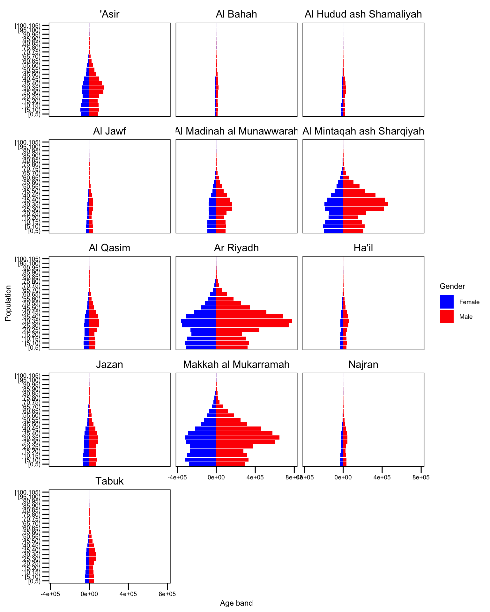
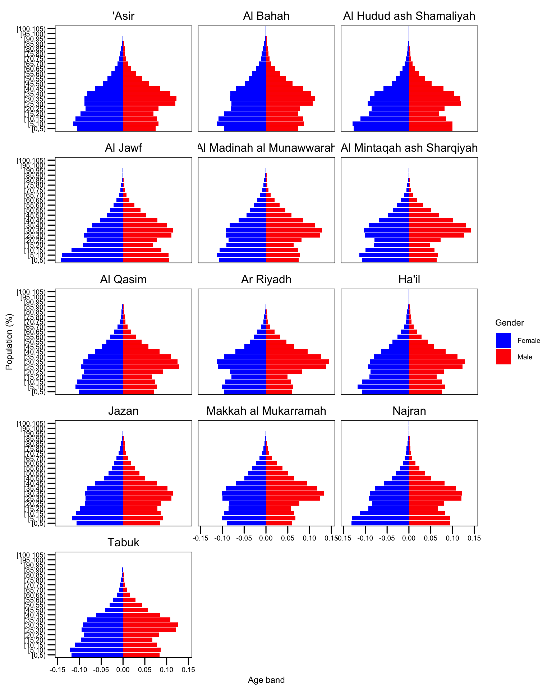

---
title: "Population demography"
format:
html:
fig-height: 10
fig-width: 8
toc: true
toc-location: right
code-fold: true
code-tools: true
execute:
freeze: true
echo: false
---
```{r}
#| label: setup
#| include: false
needs(tidyverse)
theme_set(ggthemes::theme_base() + theme(text = element_text(size = 9), panel.background = element_blank(), plot.background = element_blank(), strip.text = element_text(size = 12)))
pops <- read_csv("~/proof-of-concept/data/pops.csv")
```
## Population pyramids
```{r}
#| label: fig-pyramid
#| fig-cap: "Population pyramids"
#| fig-subcap:
#| - "Absolute population"
#| - "Relative population"
pop_age <- pops |>
group_by(Region, Gender, age_band = factor(age_band)) |>
reframe(pop = sum(Population)) |>
mutate(age_band = fct_relevel(age_band,"[100,105)", after = 20L),
age_band = fct_relevel(age_band,"[5,10)", after = 1L))
## absolute
pop_age |>
arrange(age_band) |>
mutate(pop = ifelse(Gender == "Female", -pop, pop)) |>
ggplot() +
geom_col(aes(age_band, pop, fill = Gender)) +
coord_flip() +
labs(x = "Population", y = "Age band") +
facet_wrap(~ Region, ncol = 3) +
scale_fill_manual(values = c("blue", "red"))
## relative
pop_age |>
arrange(age_band) |>
mutate(pop = ifelse(Gender == "Female", -pop, pop)) |>
group_by(Region, Gender) |>
mutate(reg_pop = sum(pop),
pop_prop = pop / reg_pop) |>
mutate(pop_prop = ifelse(Gender == "Female", -pop_prop, pop_prop)) |>
ggplot() +
geom_col(aes(age_band, pop_prop, fill = Gender)) +
coord_flip() +
labs(x = "Population (%)", y = "Age band") +
facet_wrap(~ Region, ncol = 3) +
scale_fill_manual(values = c("blue", "red"))
```